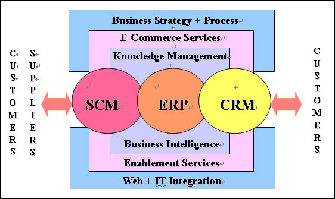
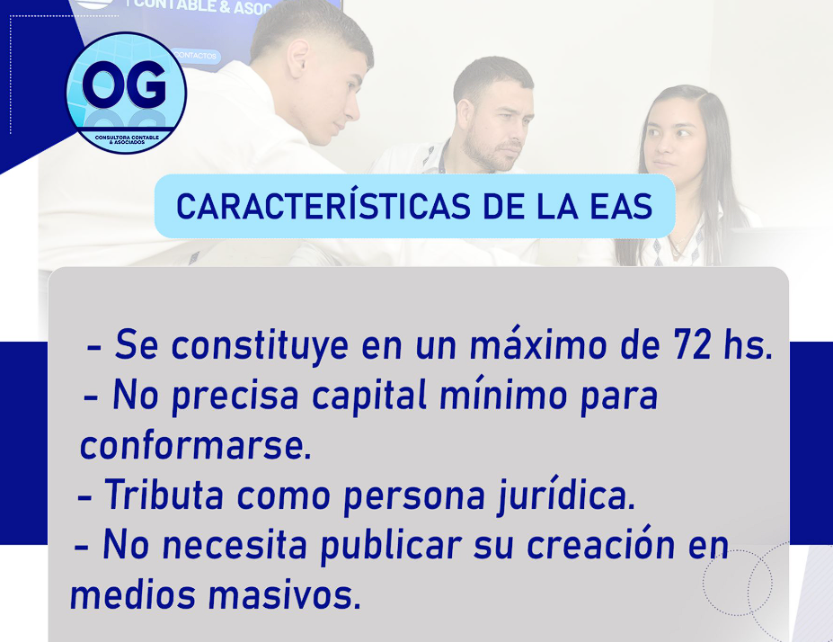

Semana 07: Aplicaciones Empresariales y Enterprise Application Software (EAS)
Esta semana profundizamos en las Aplicaciones Empresariales (EAS) —ERP, CRM, SCM y SIG— y su rol en la orquestación de datos, procesos y decisiones gerenciales. Aprenderás usos, tipos, arquitectura de integración y buenas prácticas para implantar soluciones empresariales alineadas con la estrategia.

Figura: Ecosistema de aplicaciones empresariales y su interacción con los SIG.
Objetivos de aprendizaje
Comprender el concepto de EAS y su valor estratégico en los SIG.
Identificar las características y módulos clave de ERP, CRM, SCM y SIG.
Diseñar un mapa de aplicaciones y un modelo de integración entre sistemas.
Aplicar prácticas de interoperabilidad, seguridad y gobierno de datos para EAS.
Planificar un piloto mínimo que demuestre valor (CRM → ERP → SIG).
Contenido
1. ¿Qué son las Aplicaciones Empresariales (EAS)?
Las EAS son sistemas integrados que soportan las funciones centrales de una organización (finanzas, ventas, operaciones, RH, cadena de suministro). Su propósito es ofrecer datos consistentes, procesos estandarizados y capacidad analítica para la toma de decisiones gerenciales.
Integración de datos maestros y procesos end-to-end.
Escalabilidad, configurabilidad y control de versiones.
Conectividad con plataformas analíticas y servicios externos.

Características comunes de las EAS.
2. Usos comunes de las aplicaciones empresariales
Las EAS son usadas para:
Automatizar procesos financieros y contables.
Gestionar el ciclo de vida del cliente y el servicio postventa.
Planear demanda, compras y logística en la cadena de suministro.
Proveer información consolidada al SIG para reportes y KPIs.
3. Tipos de sistemas empresariales: ERP, CRM, SCM, SIG
Descripción breve y módulos clave de cada tipo:
ERP
Gestión integrada de recursos: finanzas, compras, inventarios, producción, proyectos y RRHH.
CRM
Gestión de la relación con clientes: ventas, marketing, soporte y fidelización.
SCM
Gestión de la cadena: planificación de la demanda, compras, transporte y gestión de proveedores.
SIG
Sistemas de Información Gerencial y BI: dashboards, KPIs, análisis y reporting consolidado.
4. Integración entre sistemas: patrones y tecnologías
Integrar EAS requiere diseñar flujos de datos confiables y escalables. Los patrones comunes son: API-first, event-driven, ETL/ELT y bus de integración (ESB).
APIs & Microservicios: intercambio en tiempo real y desacoplamiento.
Mensajería/Event Streaming: Kafka, RabbitMQ para eventos y trazabilidad.
ETL/ELT: pipelines para consolidación en Data Warehouse / Data Lake.
Integra las decisiones estratégicas (Plano Estratégico) con los procesos (Plano de Procesos) y el soporte técnico (Plano de Soporte). Aquí un esquema textual que puedes incorporar en tus presentaciones:
Plano Estratégico
• Portafolio EAS • Gobernanza • Roadmap • KPIs Corporativos
Plano de Procesos
• ERP ↔ CRM ↔ SCM • Orquestación de procesos • Pipelines ETL/ELT • Automatización
Plano de Soporte
• Infraestructura Cloud/On-prem • Data Warehouse / Data Lake • Seguridad (IAM, SIEM) • DevOps / Operaciones
Video: Diferencias entre ERP y CRM
En el mundo empresarial, la eficiencia y la gestión óptima son la clave para el éxito. ¿Pero sabes qué herramienta es la mejor para tu empresa? ¿Un sistema ERP o un CRM? En este vídeo, te explicamos en detalle qué es un ERP (Enterprise Resources Planning) y un CRM (Customer Relationship Management), sus diferencias fundamentales, funcionalidades y cómo pueden mejorar distintos procesos dentro de tu negocio.
No solo eso, sino que también te mostramos cómo la integración de ambos sistemas puede llevar la gestión de tu empresa a un nuevo nivel. Con ejemplos prácticos y análisis de las plataformas más populares como SAGE, Odoo, SAP, Pipedrive, Salesforce y Zoho CRM, te damos las claves para entender cuál se adapta mejor a tus necesidades.
Video explicativo: ¿ERP o CRM? Claves para elegir la mejor solución para tu empresa.
7. Beneficios clave de una estrategia EAS integrada
Visión única del cliente y sincronización entre ventas y operaciones.
Procesos más rápidos y menos errores por integración de datos maestros.
Capacidad analítica mejorada al consolidar datos en el SIG.
Mayor resiliencia operativa y capacidad de respuesta ante disrupciones.
8. Servicios y oferta (ejemplos para proyectos reales)
Evaluación EAS: diagnóstico de portafolio y madurez de integración.
Diseño de arquitectura: roadmap de migración y catálogo de APIs.
Integración y datos: pipelines ETL/ELT, Data Warehouse, gobierno de datos.
Piloto mínimo viable: CRM → ERP → SIG con casos de uso medibles.
Seguridad y continuidad: políticas IAM, cifrado, backup y DR.
9. Roadmap resumido de implementación
Diagnóstico & Alineamiento (3–5 semanas): inventario de apps, datos maestros y prioridades.
Diseño & Piloto (6–10 semanas): APIs, ETL y piloto CRM→ERP→SIG en un dominio crítico.
Despliegue & Escalado (continuo): migración por fases, gobernanza y capacitación.
10. Buenas prácticas y gobernanza
API-first y evitar integraciones punto-a-punto.
Unificar datos maestros (MDM) antes de integrar en masa.
Implementar control de acceso y registro de auditoría (IAM & SIEM).
Medir impacto con KPIs (Tasa de error de integración, tiempo de sincronía, SLA de ETL).
Plan de gestión del cambio y formación para usuarios clave.
11. Herramientas y tecnologías representativas
Área
Tecnologías
Uso
ERP
SAP S/4HANA, Oracle ERP Cloud, Dynamics 365, Odoo
Procesos centrales y transaccionales
CRM
Salesforce, HubSpot, Zoho CRM
Ventas, marketing y servicio al cliente
SCM
Oracle SCM, SAP Ariba, Infor Nexus
Cadena de suministro y logística
Integración / ETL
Mulesoft, Talend, Airflow, dbt, Kafka
Conectividad, pipelines y streaming
SIG / BI
Power BI, Tableau, Qlik, Looker
Dashboards y analítica
Materiales de estudio
Lectura: Aplicaciones empresariales y EAS
Documento con conceptos, comparativas y checklist de diagnóstico para portafolio EAS.
En la Semana 07 exploramos en detalle las Aplicaciones Empresariales (EAS) —ERP, CRM, SCM y SIG— y su integración dentro de una arquitectura EPS. El foco práctico es diseñar un piloto mínimo (CRM → ERP → SIG) que entregue información confiable para la toma de decisiones gerenciales.
¿Quieres que te genere la guía técnica del laboratorio paso a paso (scripts de ejemplo, Swagger de APIs y pipeline ETL básico)? Puedo prepararla lista para usar.